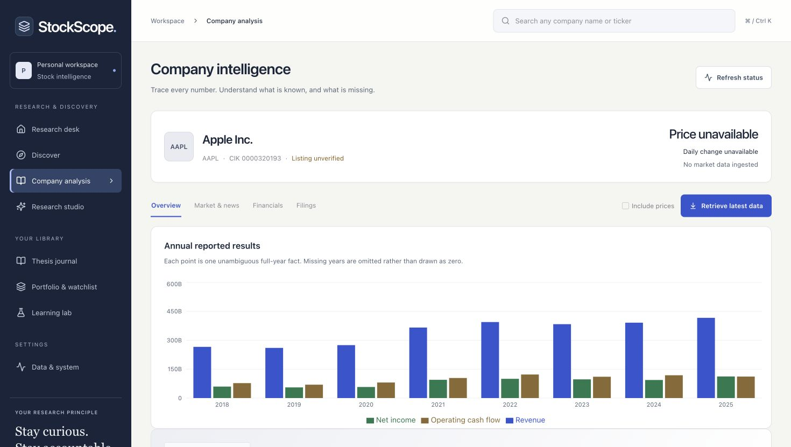

Stock Intelligence Platform
Research grounded
in evidence.
A local-first research workspace that connects company discovery, SEC-backed analysis, persistent research jobs, and a reviewable thesis journal. The redesigned interface keeps sources, reporting periods, and missing data visible throughout the workflow.
Inside the build
- Ingest SEC disclosures with source snapshots, reporting periods, and versioned financial facts.
- Retrieve filing passages using hybrid keyword and local vector search.
- Run persistent, cancellable research jobs with deterministic evidence briefs by default and optional local model interpretations.
- Compare up to three companies using dated SEC facts; track theses, watchlists, filing alerts, and source-linked reviews.
- Explore fifteen learning lessons and a market workspace with an implemented Alpaca IEX adapter; live feed access is not yet verified.
Active local build · SEC-backed research. Market adapter implemented; live access unverified. No trade execution. AI interpretations require review.